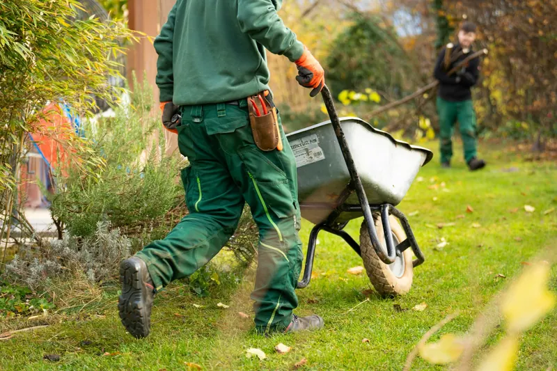
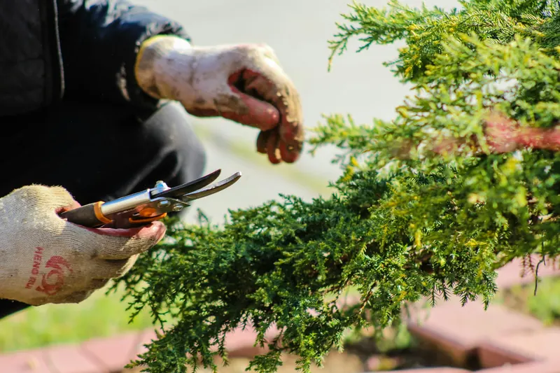
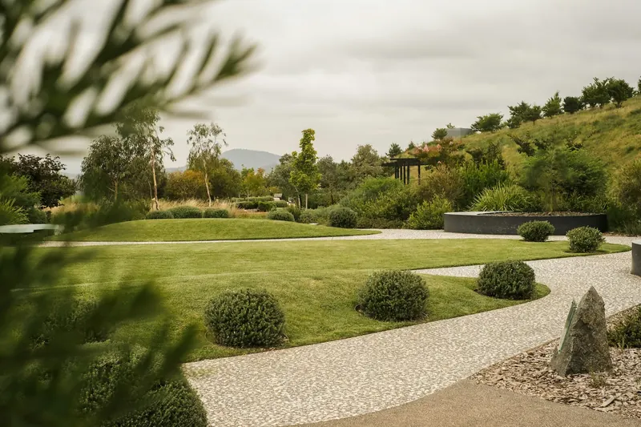
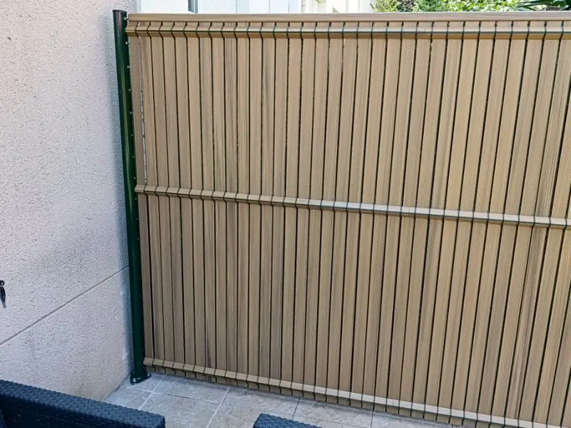
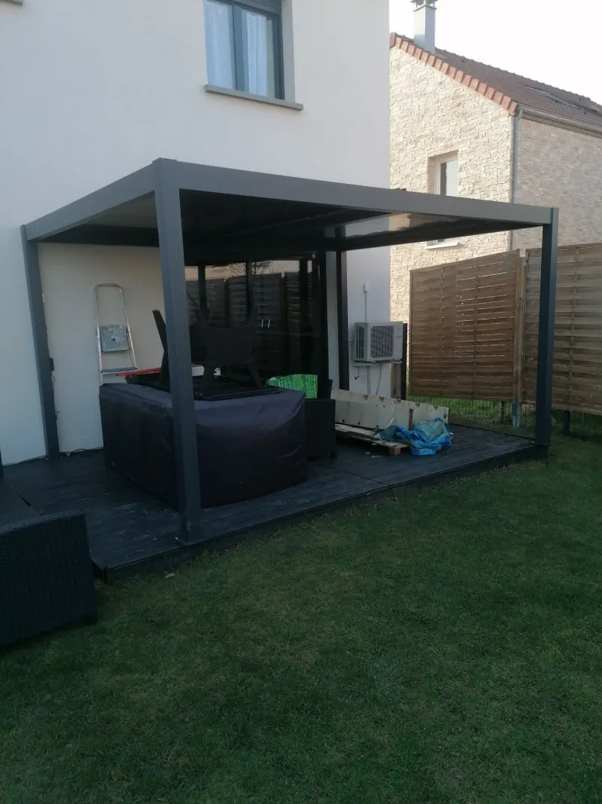
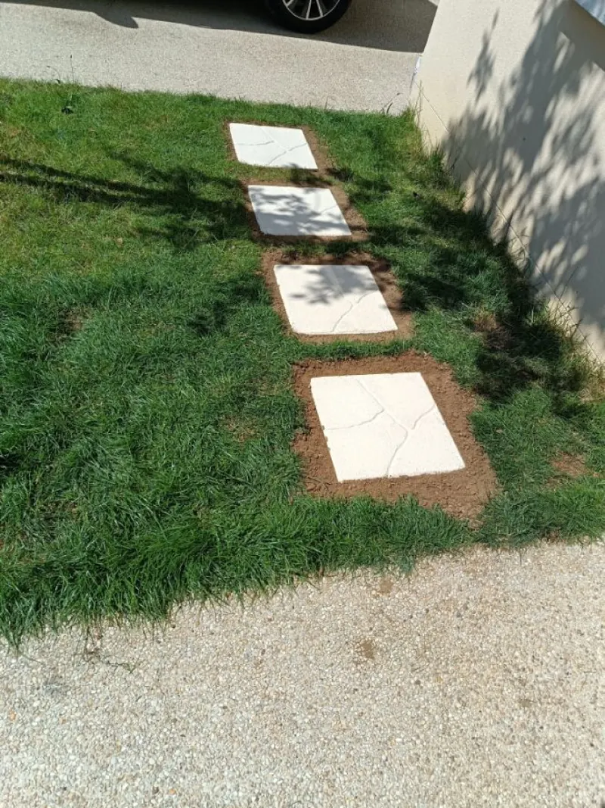
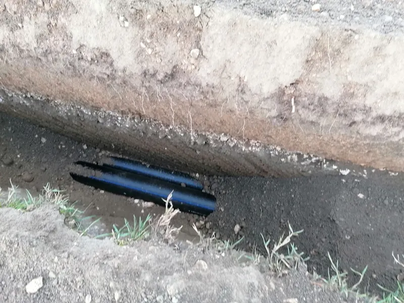
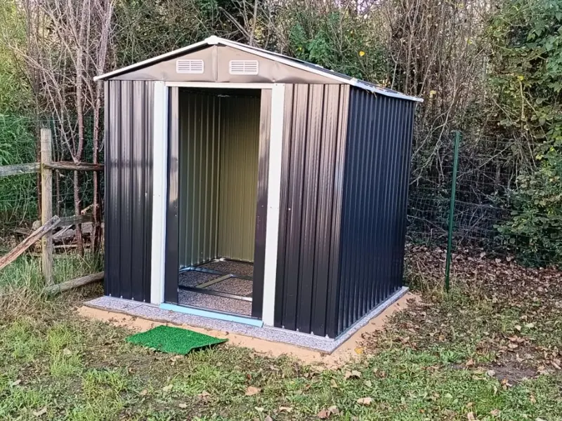
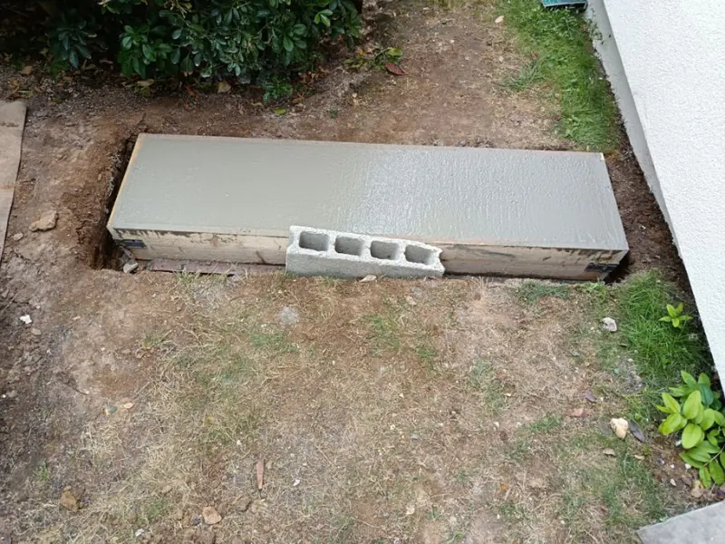
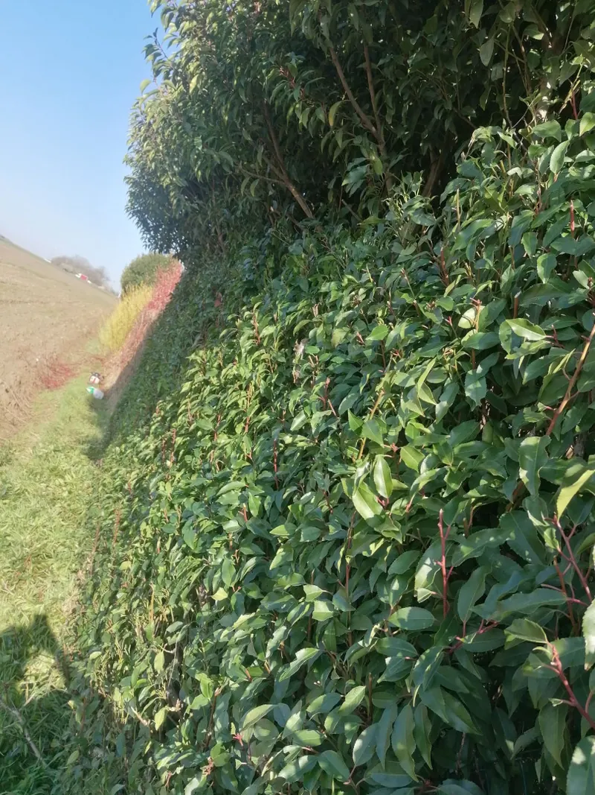

Brétigny-sur-Orge · Essonne
Paysagiste à Brétigny-sur-Orge
Entretien et aménagement de jardin, clôtures, pergolas
et petits travaux : un seul artisan pour votre extérieur et votre maison.
Paysagiste diplôméBac pro aménagements paysagers
Matériel professionnelTout l’équipement pour vos travaux
Réponse rapideÀ vos demandes de devis
Basé à Brétigny-sur-OrgeIntervention en Essonne
Nos prestations
Du jardin à la maison, tout ce qu’il faut

Entretien de jardinTonte, taille de haies, débroussaillage, élagage, désherbage et ramassage des déchets verts.Découvrir
Aménagement paysagerCréation de jardin, gazon naturel ou synthétique, plantations, allées et pas japonais, arrosage automatique.Découvrir
Clôture & portailPose de clôtures et de grillages, lames d’occultation, portails et seuils maçonnés.Découvrir
Terrasse, pergola & abriMontage de pergolas et d’abris de jardin, nettoyage de terrasse, entretien de piscine.Découvrir MultiservicesPetits travaux, montage de meubles et de cuisines en kit, pose de sol, carrelage, peinture, petite plomberie.Découvrir Un autre projet ?Décrivez-le-nous, on vous dit ce qu’on peut faire.Demander un devisQui sommes-nous
Un jeune paysagiste, le goût du travail bien fait
A.S.H Paysage & Multiservices, c’est Aurélien Saint-Hilaire, paysagiste diplômé installé à Brétigny-sur-Orge. Titulaire d’un bac professionnel Aménagements paysagers et d’un certificat de spécialisation en maçonnerie paysagère, il a créé son entreprise en 2024 pour proposer un service complet : le jardin, bien sûr, mais aussi les petits travaux de la maison.
Il aime tout ce qui est manuel et créatif, à l’extérieur comme à l’intérieur, et dispose de tout le matériel professionnel pour mener vos projets avec soin et souci du détail.
- Bac professionnel Aménagements paysagers
- Certificat de spécialisation Maçonnerie paysagère
- Entreprise immatriculée, SIRET 930 654 116 00019
Nos chantiers
Quelques réalisations





Comment ça se passe
Trois étapes, simplement
- Vous décrivez votre projetPar le formulaire, avec quelques photos si possible. Nous vous recontactons rapidement.
- Nous passons voirUne visite sur place pour comprendre ce que vous voulez et vous établir un devis clair.
- Nous réalisonsÀ la date convenue, avec le matériel adapté, et le chantier laissé propre.
Contact
Parlons de votre projet
Basé à Brétigny-sur-Orge (91220), intervention dans les communes voisines
- Lundi au vendredi8 h – 19 h
- Samedi8 h – 18 h
- DimancheFermé
Brétigny-sur-Orge · Saint-Michel-sur-Orge · Le Plessis-Pâté · Leuville-sur-Orge · Marolles-en-Hurepoix · Saint-Germain-lès-Arpajon · Arpajon · La Norville · Longpont-sur-Orge · Sainte-Geneviève-des-Bois · Villiers-sur-Orge · Linas… toutes les communes
Questions fréquentes
Dans quelles communes intervenez-vous ?
Nous sommes basés à Brétigny-sur-Orge et intervenons dans les communes voisines de l’Essonne : Saint-Michel-sur-Orge, Le Plessis-Pâté, Leuville-sur-Orge, Marolles-en-Hurepoix, Arpajon, Sainte-Geneviève-des-Bois, Linas, Montlhéry…
Comment obtenir un devis ?
Remplissez le formulaire en décrivant votre projet, avec des photos si possible. Nous vous recontactons rapidement pour convenir d’une visite et établir le devis.
Êtes-vous un professionnel déclaré ?
Oui. A.S.H Paysage & Multiservices est une entreprise immatriculée (SIRET 930 654 116 00019), dirigée par Aurélien Saint-Hilaire, diplômé en aménagements paysagers.
Quels sont vos horaires ?
Du lundi au vendredi de 8 h à 19 h, et le samedi de 8 h à 18 h.
Faites-vous aussi des travaux à l’intérieur ?
Oui, c’est la partie multiservices : montage de meubles et de cuisines, pose de sol, carrelage, peinture et petite plomberie.